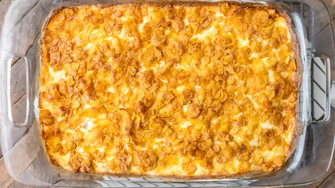

Cheesy Potato Casserol

Description
This cheesy side dish has a few different names, cheesy potatoes casserole, cheesy potato bake, funeral potatoes, and hashbrown casserole are just a few. Its one of those recipes you see at every occasion.
The best part about it is you can throw it all together in a mixing bowl, pour it in a 9x13 baking dish, put it in the oven and you're done!
Ingredients
- frozen hashbrown potatoes - cubed or shredded
- sharp cheddar cheese
- sour cream
- cream of chicken soup
- black pepper and salt - to taste
- butter
- cornflakes - frosted works too
Steps
- Preheat oven to 375 degrees.
- Add frozen hashbrowns, cream of chicken soup, sour cream and cheese to a large bowl and mix well
- Add the potato mixture to a large baking dish coated with cooking spray.
- Top with a mixture of crushed up cornflakes and butter.
- Bake uncovered for 35-40 minutes until casserole is hot and bubbly.